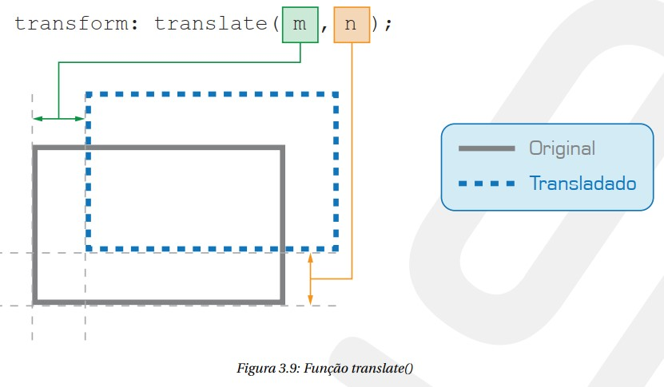
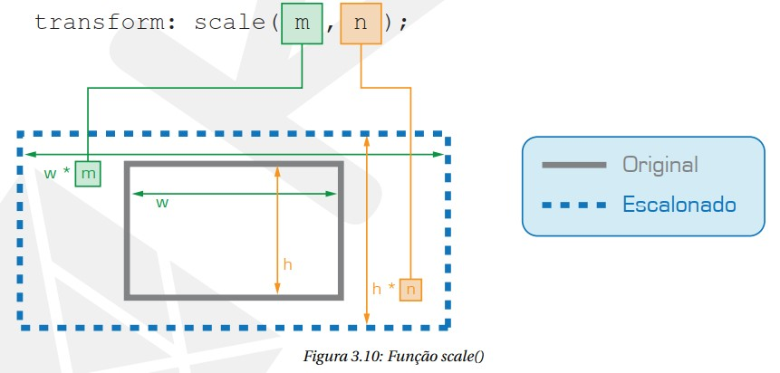
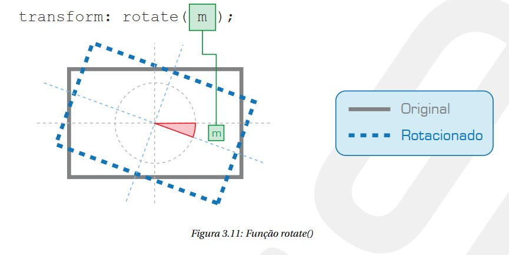
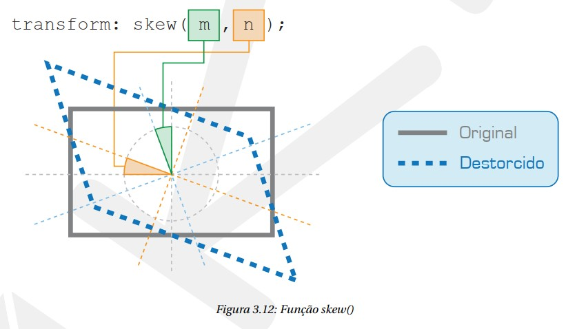

O resultado da aplicação da função translate(m, n) é semelhante ao resultado obtido ao mover um elemento através do atributo position com o valor relative. Ao utilizar a função translate(m, n) um elemento é transladado a m unidades de medida da esquerda e n unidades de medida do topo.
A função scale(m, n) escalonará as dimensões de um elemento. O escalonamento será aplicado sobre a largura a uma taxa definida por m e sobre a altura a uma taxa definida por n. Caso a fun- ção seja chamada com apenas um parâmetro, a mesma taxa será aplicada na altura e largura do elemento.
A função rotate(m) rotacionará um elemento em torno do seu ponto de origem. O valor de m deve ser dado em graus, voltas ou grado.
A função skew(m, n) distorcerá um elemento em relação aos eixos x e y. m e n definem as distor- ções aplicadas nos eixos x e y respectivamente. Os valores de m e n devem ser dados em graus, voltas ou grado.
